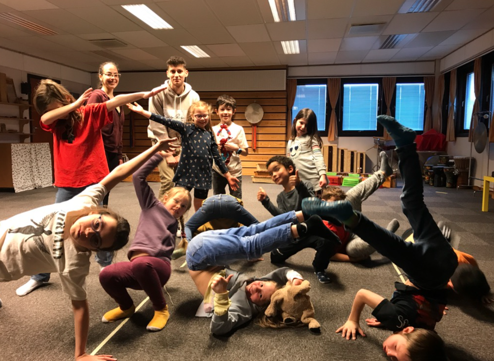

PS Dance
The EC/PS dance class is a highly popular physical and social co-curricular activity. ISS dance class is a collaboration between the EC/PS students and staff and High School CAS students in which the HS CAS students lead the dance sessions. It is a physically demanding and socially and emotionally challenging sport that requires participants to co-create routines or learn set dances. Most sessions begin with a warm up activity and games. Participating in dance can offer students many benefits, including opportunities to develop physical fitness, such as, improved flexibility, coordination, balance and cardiovascular health. As well as developing critical thinking skills, boosting cognitive performance, and self-discipline. Our collaborative dance program fosters a sense of school spirit, community and pride when students get to perform in the school theater and build relationships with the older students. Overall, dance is a great way for students to stay active, make friends, and develop important life skills.
Grade 1-5, but currently Grades 1, 2 and 3 (Jan 2023)
Time: Friday 15:15-16:15
Location: Various: Dance/drama studio, PS gym and EC/PS Music room
Supervisors: sbannerman@isstavanger.no and vjones@isstavanger.no
